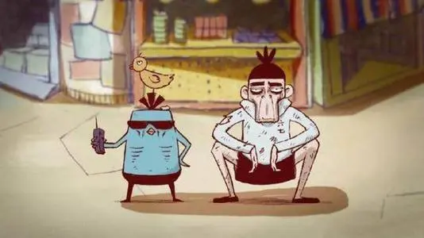

伍六七
大保J发廊首席发型师
基本信息
- 伍六七/ 男 / 21岁
- 173cm
- 62kg
深入一点
技能点

身份背景
-
伍六七失忆前为玄武国刺客联盟首席暗影刺客，代号柒，说着一口标准的粤语。 失忆后以卖牛杂为生，后为小鸡岛大保发廊的高级发型师兼入门级刺客，位于刺客排行榜17369位。
相貌衣着
-
伍六七失忆前着一袭紫衣，发型桀骜，面容冷峻，赤色瞳孔；失忆后发型扎了起来自然形成三根毛， 上身着一件左胸口有黑色“六七”二字、背面有一个黑色“七”。“七”的周围有一个黑色大圆的白色卫衣，卫衣的帽子吊着三根毛。下身搭配黑色短裤， 在第一季中有穿过黑色长裤。鞋子是一双经典的北京老布鞋。

性格特点
-
伍六七失忆前伴随冷酷果敢的肃杀气息，不喜多言，十分遵守刺客守则，不杀任务以外的人，也不救任务以外的人。 失忆后的伍六七是一个假贱贱、真温柔、热血、无厘头但是很善良的人 ，口音为广普，生活中总是喜欢不经意间搞笑 ，嘴巴虽然有点毒但有时候却又能讲出很有大道理的心灵鸡汤。
对战记录
| 对手 | 结果 | 描述 |
|---|---|---|
| 汪星人首领 | 失败 | 发现打不过后立即逃走，后来伪装成汪星人首领去见喵星人首领化解了战争 |
| 陈阿婆 | 无果 | 最终在知道真相后放弃刺杀，并在鸡大保正要刺杀阿婆时出手相救 |
| 杰克船长 | 胜利 | 与其较量时用智取胜利，对方按照约定将其送出海盗船 |
| 斯特国王子 | 胜利 | 起初处于弱势无法将其打败，后来恢复部分记忆后成功将斯特国王子击败 |
| 希义 | 无果 | 被捂住嘴巴待了一个下午，希义最终放弃 |
| 杰克船长 | 胜利 | 起初处于劣势被打败，后来恢复部分记忆击败 |
| 山鸡王 | 失败 | 被它带来的“玩具”暗算，弹出小岛 |
| 山鸡王（第二次） | 胜利 | 变成蓝羽鸡大飞让对方失去理智，剪断电线让其失去行动能力 |
| 何大春 | 失败 | 被对方使用“情比金坚七天锁”制服 |
| 赤牙 | 无果 | 接受了过去的自己后恢复记忆，同时使用七段剪与魔刀千刃与其战斗， 虽然用尽全力但无法击破赤牙的血魔护体，最终赤牙被青凤补刀。 |